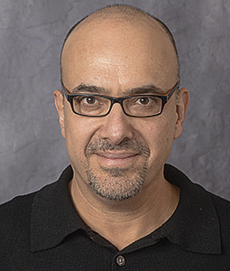

Amit Almor
Principal investigator · Psychology & Linguistics
Amit studies how language interacts with memory, attention and spatial cognition. His research includes discourse reference, neural processes supporting comprehension, pragmatics, and human perceptions of artificial agents.